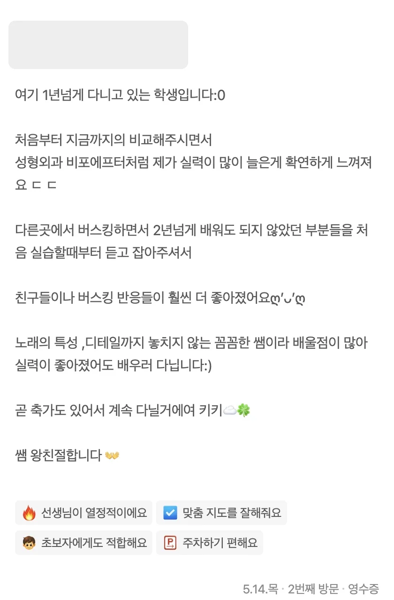
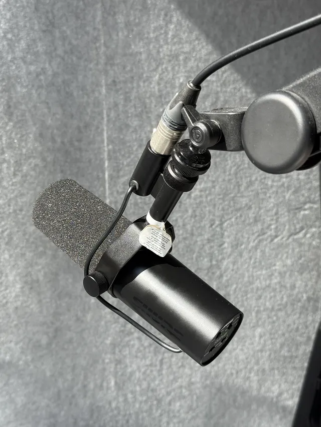
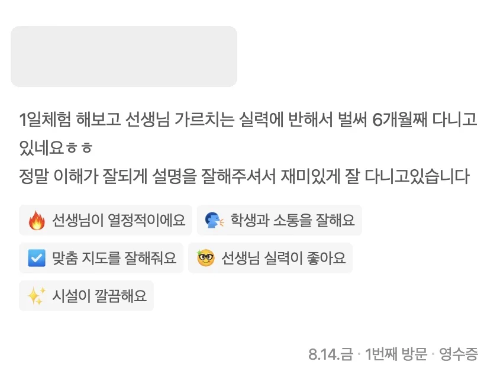
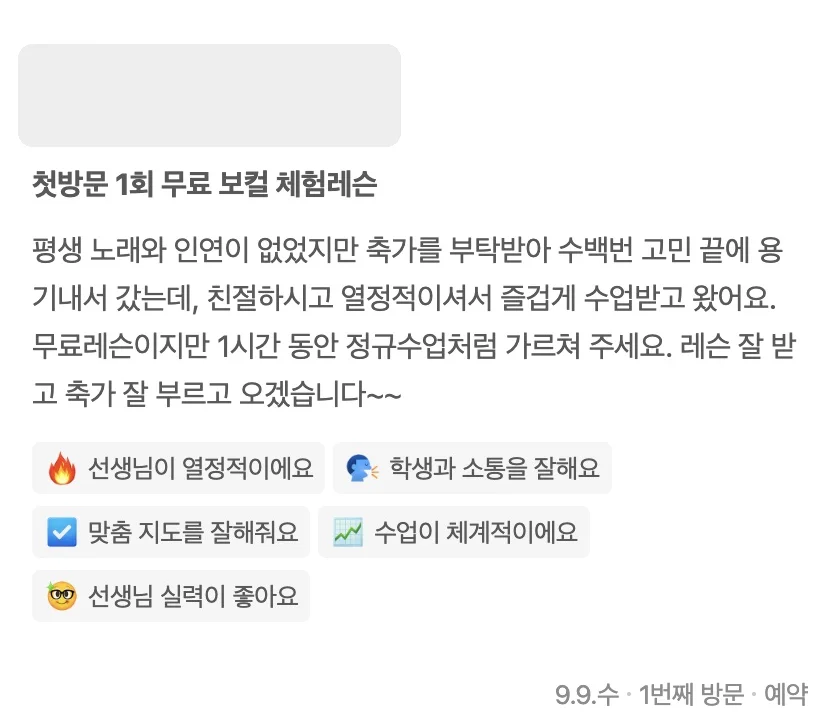
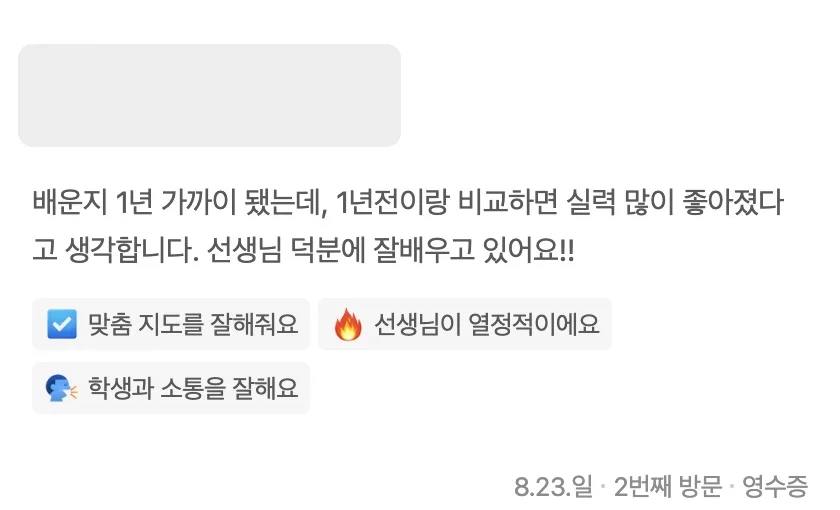
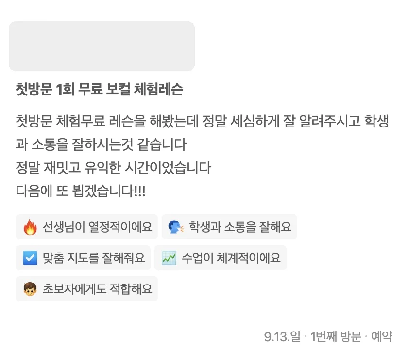
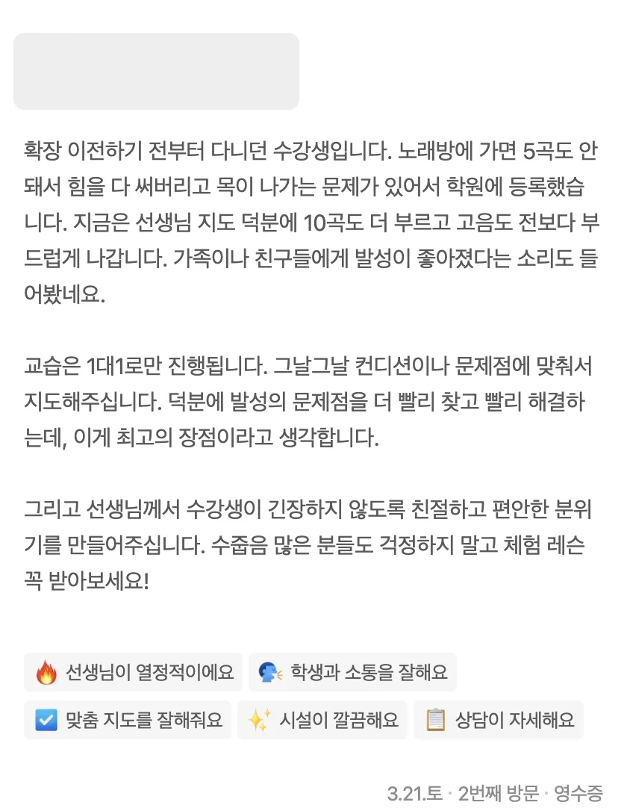
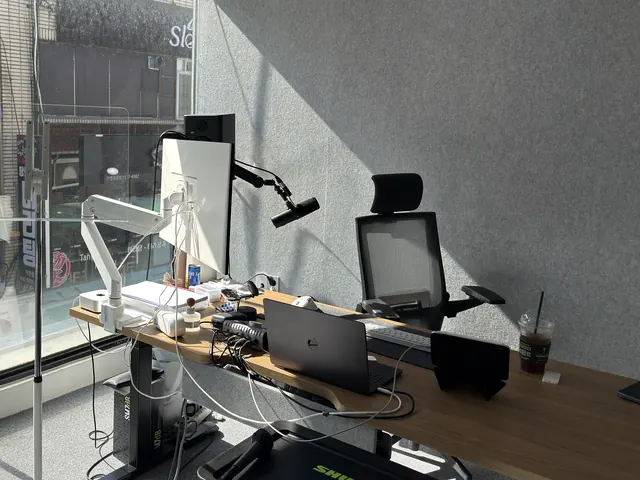
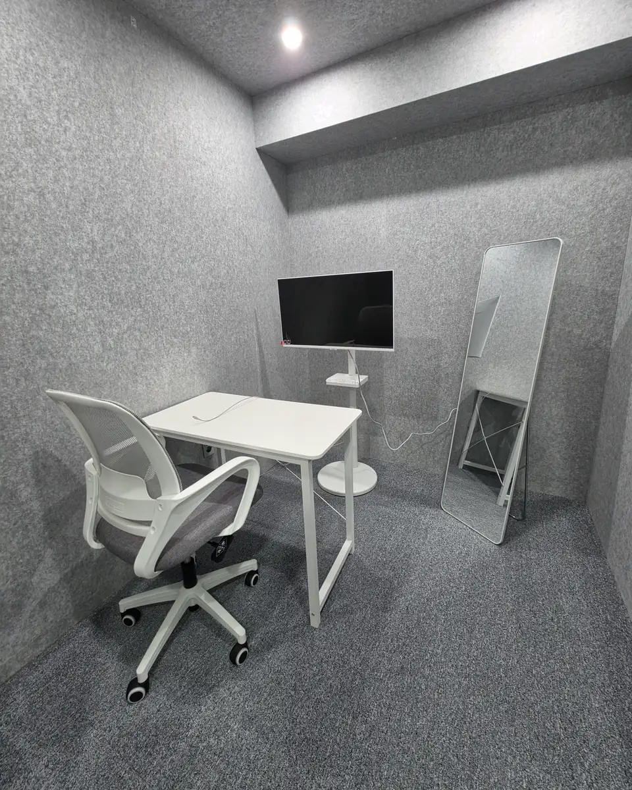
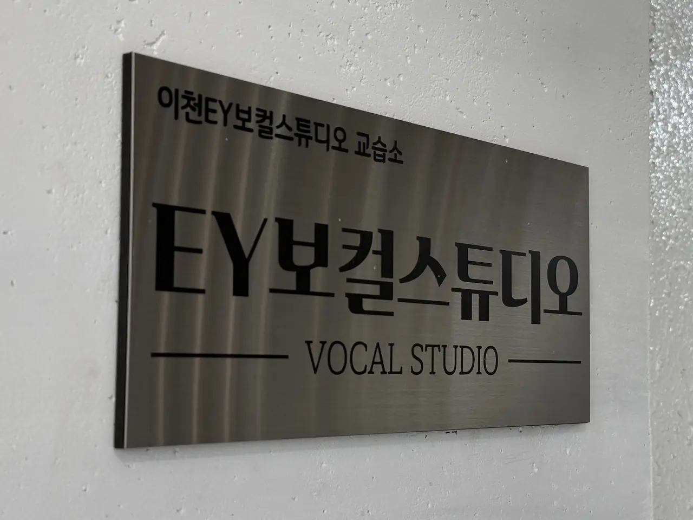

오래 다닌 분
친구들이나 버스킹 반응들이 훨씬 더 좋아졌어요
캡처 보기캡처 접기


부르고 싶은 곡과 평소 어려웠던 부분부터 들려주세요. 발성 방법을 바꿔 같은 구절을 불러 보고, 두 녹음을 함께 들어요.
원하는 곡과 지금 고민부터 들어요.
음역대와 발성 습관을 확인해요.
기본기와 곡 연습 순서를 지금 속도에 맞춰요.
다음 수업까지 연습할 포인트를 남겨 드려요.
네이버 방문자 리뷰에 남겨 주신 이야기입니다.
친구들이나 버스킹 반응들이 훨씬 더 좋아졌어요

선생님 가르치는 실력에 반해서 벌써 6개월째 다니고 있네요

친절하시고 열정적이셔서 즐겁게 수업받고 왔어요.

1년전이랑 비교하면 실력 많이 좋아졌다고 생각합니다.

학생과 소통을 잘하시는것 같습니다

가족이나 친구들에게 발성이 좋아졌다는 소리도 들어봤네요.

매달 수강 중인 분(홀딩 포함) 가운데 다음 달에도 등록을 이어간 비율입니다. 스튜디오 레슨 기록을 기준으로 집계했습니다.
88.1%
2025년 10월 ~ 2026년 9월
93.0%
2026년 9월
시범은 SM7dB, 수강생의 노래는 BETA58A로 녹음해요. 바로 옆 KRK 스피커로 두 소리를 비교해요.

수업이 없는 날에도 연습하러 오세요. 혼자 연습한 녹음을 보내 주시면 피드백을 드려요.

등록 수강생은 레슨이 없는 날에도 언제든 연습실을 이용하실 수 있어요. 집에서 소리 내기 어렵다면 수업에서 정리한 연습을 이어가는 데 활용해 보세요.
수업 전후의 녹음을 비교하고, 혼자서도 반복할 수 있도록 연습할 순서와 포인트를 정리해 드려요. 연습하다 헷갈리는 부분은 24시간 언제든 녹음이나 영상으로 보내주세요. 레슨이 없거나 시간이 날 때 확인하고 피드백을 드립니다. 자세한 이용 방법은 체험레슨에서 안내해 드려요.
편한 차림으로 오시고, 불러보고 싶은 곡이 있다면 알려주세요. 녹음 장비는 준비되어 있어요. 방문 전 예약으로 가능한 시간을 먼저 확인해 주세요.
이천시 어재연로 37, 3층에 있어요. 주차는 창전동 임시공영주차장을 이용하시면 되고, 레슨 시 주차권 발급이 가능합니다. 방문 전 네이버플레이스에서 길찾기와 당일 운영 안내를 확인해 주세요.
네, 첫 방문 무료 체험레슨을 예약하실 수 있어요. 체험은 50분이며, 현재 목소리와 고민을 살펴보고 무엇을 개선할지 함께 이야기해요. 녹음으로 변화를 확인하고 다음 연습 방향도 안내해 드립니다. 직접 수업을 경험한 뒤 결정하셔도 괜찮아요. 네이버 체험 예약
네, 지금 목소리와 노래하는 습관을 확인하는 것부터 시작해요. 기초가 필요하면 호흡과 발성부터, 이미 익숙한 부분이 있으면 다음 단계부터 함께 잡아갑니다. 잘해야 시작할 수 있는 수업은 아니에요.
매주 같은 시간에 오는 고정 일정과, 가능한 시간을 다시 맞추는 유동 일정이 있어요. 유동 일정은 남아 있는 시간 안에서 조율하므로 원하는 시간이 항상 비어 있지는 않을 수 있어요. 생활 패턴에 맞는 방식부터 함께 정해요.
같은 설명도 사람마다 다르게 느낄 수 있어요. 먼저 어디에서 힘이 들어가고 소리가 막히는지 확인하고, 몸을 쓰는 방법부터 익혀요. 그 감각을 발음과 노래로 연결한 뒤 녹음으로 달라진 소리를 함께 들어봅니다.
레슨비는 상담 때 안내해 드려요. 첫 방문 체험 레슨은 무료라서, 받아 보신 뒤 부담 없이 정하시면 돼요.
경기도 이천시 어재연로 37, 3층
주차창전동 임시공영주차장 (이천종합버스터미널 근처)
레슨 시 주차권 발급 가능합니다.

네이버에서 체험 시간을 고르세요.
먼저 궁금한 점이 있다면 카카오톡 오픈프로필에서 채팅을 시작해 주세요.
전화 문의 0507-1377-4624매일 12:00–22:00 · 설날·추석 연휴 휴무